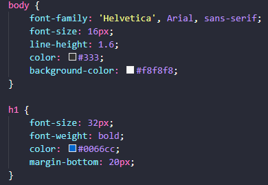
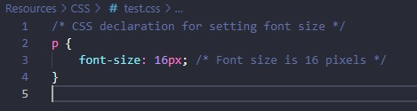
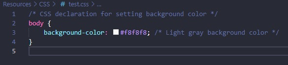
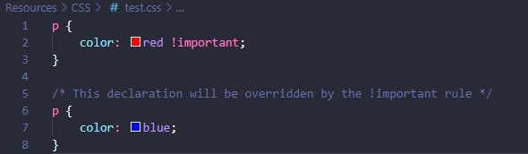
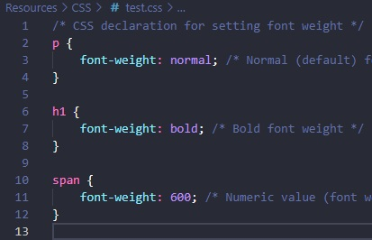
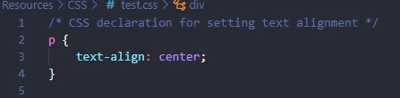
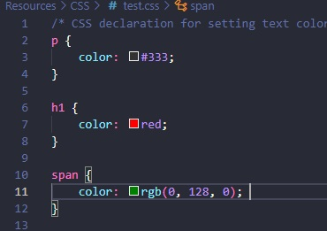
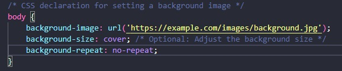
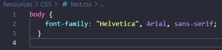

When it comes to creating engaging and aesthetically
pleasing websites, visual rules play a crucial role
in defining the appearance and layout of web
elements. Cascading Style Sheets (CSS) is the
language used to apply these visual rules, providing
web developers with the power to control everything
from colors and fonts to spacing and responsiveness.
Visual rules in web design refer to the set of
instructions that dictate how elements on a webpage
should look. These rules encompass a wide range of
styling options, allowing developers to tailor the
visual experience for users.
CSS declarations
CSS declarations are the building blocks of
styles. A CSS
declaration consists of a property and a value,
and it defines how a particular HTML element
should be styled.
Property: This is the attribute of an HTML
element that you want to style. Examples include
color, font-size, margin, padding, etc.
Value: This is the specific setting for the
property. It can be a numeric value, a color, a
measurement unit, or one of several predefined
keywords.

Font Size
Setting the font size is a common CSS
declaration used to control the size of text
within HTML elements. The font-size property
determines the size of the font, and it can be
specified using various units.

Background Color
Setting the background color is a common CSS
declaration used to define the color of an
element's background. The background-color
property is employed for this purpose.

!important Rule
The !important rule in
CSS is a way to give a declaration more weight,
making it override other declarations even if
they have higher specificity or appear later in
the stylesheet. It is often used when you want
to ensure that a particular style takes
precedence.

Opacity
The opacity property in CSS is used to control
the transparency of an element. It takes a value
between 0 and 1, where 0 is completely
transparent (invisible), and 1 is completely
opaque (fully visible). Values between 0 and 1
represent varying levels of transparency.

Font Weight
The font-weight property in CSS is used to set
the thickness or boldness of the characters in a
text element. It accepts various values,
allowing you to specify different levels of
boldness.

Text Align
The text-align property
in CSS is used to set the horizontal alignment
of text content within an element. It defines
how the inline content of a block container is
aligned within the block container's content
box.

Setting foreground text
color in CSS
In CSS, the color property is used to set the
foreground text color of an element. You can
specify the color using various formats such as
color names, hexadecimal codes, RGB values, or
HSL values.

Resource URLs
Resource URLs typically refer to the web
addresses (URLs) of various resources used in
web development, such as images, stylesheets,
scripts, and other files. These URLs are used to
locate and load these resources into web pages.
In CSS, the url() function is used to wrap
resource URLs. These can be applied to several
properties such as the background-image.
Background Image
In CSS, you can set a background image for an
element using the background-image property.

Font Family
In Cascading Style Sheets (CSS), you can specify
font families for text using the font-family
property. The font-family property allows you to
define a prioritized list of font family names
and/or generic family names for an element.
